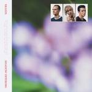
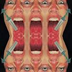
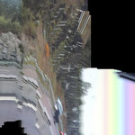
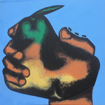
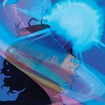

Quick Takes (June 2020)
Hi there, and welcome to this jam-packed installment of Quick Takes.
This time, I'm joined by regular contributors Mark, Ethan, and Peter—plus the debut appearance of No Ripcord Emma Bacuhner. Some of my highlights include takes on Freddie Gibbs' latest knockout collaboration with The Alchemist, LA rock mainstays Phantom Planet (who recently made their return after a decade-long hiatus), and Canadian art-rock purveyors Braids. Peter gave his thoughts on emerging industrial punk band Special Interest, while Mark had very positive things to say about Flying Nun Records-influenced Melbourne band The Stroppies. Emma rounds it off with her take on Chelsea Wolfe's visceral side-project Mrs. Piss. I'd like to think there's something for everyone with these great albums, all of which were positive; no time for the stinkers this month.
What were your favorite albums during the month of June? Anything we didn't get to review that we should've? You can always reach us on Facebook, Instagram, or our official Twitter page. - Juan
...
Braids
Shadow Offering
(Secret City Records)
On Shadow Offering, Braids' fourth album and first in five years, singer Raphaelle Standell-Preston focuses on relationships and their dynamic and complex nature. Standell-Preston tackles the gray areas that don't often come with easy answers, and what happens when those boundaries get trampled. She doesn't hold back, like on Upheaval II, where she confesses to pursuing the wrong men while taking responsibility for those wrong decisions. On Young Buck, she goes into her experiences dating a wrong man—one she cheekily describes as "a blaring example of what I am drawn towards and should strongly move away from." Standell-Preston usually lets us into these bite-sized stories from a personal point of view, delivering her soulful croon as the trio blends gurgling synths with smooth R&B grooves. Even if the songs sometimes lack some nuance, as is the many thematic layers the band puts on display, Standell-Preston manages to keep the album afloat when she's at her most open-hearted and assertive. [7/10] Juan Edgardo Rodríguez
 Dougie Poole
Dougie Poole
The Freelancer’s Blues
(Wharf Cat)
If you take a cursory glance at the tracklist for Dougie Poole's sophomore release, The Freelancer’s Blues, it’s like you’ll know what you’re in for. The album opens with the slightly catchy and seriously funny Vaping on the Job, and that’s only the second-best song title here. Poole is the sort of singer-songwriter that’s needed to break through the swamp of underwritten, oversaturated acoustic guitar music, even if this album isn’t great. With a vaguely sarcastic country bend and genuine talent in the lyrical department, he’s sure to make a splash someday. Poole keeps the album fun with his shit-eating grin and low tenor, but there’s a serious sense that producer Jonathan Schenke has no idea how to handle country-adjacent textures. On Natural Touch, you can understand why they attempted to pull off the sound of a suave, '70s FM lounge, but those grating synths in the intro don’t do the song any favors. Annoyances like this pop up across the entire album, but what helps the album stay bearable is Poole’s sweetness that contrasts his vaguely Father John Misty-esque demeanor. On the charming title track closer, he sings about someone deserving better love than him even though they’re stuck together. Let’s hope we hear more from Poole, although maybe with less scratching synths in the future. [6/10] Ethan Gordon
 Freddie Gibbs & The Alchemist
Freddie Gibbs & The Alchemist
Alfredo
(ESGN / ALC / EMPIRE)
Freddie Gibbs' inspired collaboration choices as of late have raised the nimble rapper's music to stratospheric proportions, starting with Alex Goose and Madlib on their lean, yet sturdy effort Piñata. On his latest, Alfredo, he joins forces once again with revered beatmaker The Alchemist for a semi-conceptual album centered around the hustle and bustle of gangsta life. Gibbs is a masterful curator who knows who to match his flows with, like on God is Perfect and Look at Me, splicing soul loops, movie clips, and inventive beats etched into his gruff vocals. The beats are an attraction in itself, but make no mistake: they wouldn't be as good if Gibbs weren't behind the mic spitting his poetic yet matter-of-fact observations. From the grim (Frank Lucas) to the braggadocious (Baby $hit), he references Black kingpins with a calm and collected flair that makes his rhymes all the more appealing. Gibbs also brings along heavyweight rappers like Tyler, the Creator, Rick Ross, and Benny the Butcher in the fold. But still, you realize how thoughtful and skilled the duo's production is when those guest appearances are barely unrecognizable. [8/10 - Believe the Hype] Juan Edgardo Rodríguez
Jockstrap
Wicked City - EP
(Warp)
Jockstrap don’t sound like anyone else making music right now, and there aren’t that many bands you can say that about. The duo of singer-songwriter-violinist Georgia Ellery and electronic producer Taylor Skye met as students at the esteemed Guildhall School of Music & Drama, blending a wildly diverse range of influences into something that is equal parts beautiful and bizarre. Wicked City, their second EP together and first release since signing to Warp, pushes their innovative combination of baroque pop balladry and jarring, distorted production to new heights. The tone is set from the get-go with Robert, an almost Death Grips-like noisy, experimental track featuring a fantastic verse by the late Stepa J. Groggs of Injury Reserve (rest in power). But things swiftly move in the opposite direction with the following track, Acid, showcasing cinematic string arrangements and Ellery’s charming soprano vocals. The entire EP is marked by rapid shifts in mood, sometimes in the same song, such as on highlight The City: the track begins as a plaintive piano ballad, but soon descends into a funhouse-like atmosphere as Ellery recites a disturbing passage from Kathy Acker’s Blood and Guts in High School over Skye’s chopped-and-screwed beats. Wicked City proves that Jockstrap have nothing if not range, and secures their place as one of the UK’s most intriguing new bands. [8/10] Emma Bauchner
 Mrs. Piss
Mrs. Piss
Self-Surgery
(Sargent House)
Mrs. Piss is far from the first collaboration between singer-songwriter Chelsea Wolfe and drummer Jess Gowrie, but it’s some of their most striking work to date. On Self-Surgery, the pair blend elements of grunge, metal, punk, and industrial, and spit out eighteen minutes of raw, visceral, unadulterated noise. Literally embracing filth from the get-go (I'm bathing in the filth of the world, screams Wolfe on opener To Crawl Inside), Wolfe and Gowrie unleash rage, darkness, and grit, holding nothing back. There’s a feminist spirit running through their approach and lyrics (“Didn’t your mother ever teach you, pig? / You’re never gonna take it from me” is one of many memorable lines on the closing title track), but the music is heavier and darker than anything that’s come out of established scenes like the Riot Grrrl movement—Wolfe and Gowrie developing something that is truly their own. Mrs. Piss’ sound is original, raucous, and delightfully angry. Self-Surgery’s only flaw is its brevity; hopefully, we’ll be hearing more from Mrs. Piss in the future. [8/10] Emma Bauchner
 Nana Grizol
Nana Grizol
South Somewhere Else
(Arrowhawk/Don Giovanni)
Nana Grizol’s Theo Hilton steps out from his prior albums’ detailing of life as a queer man in the south to tackle broad themes of racial inequality on South Somewhere Else. Hilton’s greater exploration of the political landscape of his surroundings may have sprouted from Nana Grizol’s contribution to a 2017 set of songs inspired by the 27 amendments to our constitution. For their part, the band covered the 7th Amendment—the one that “in arguendo” grants you access to a trial by a jury of your peers. But history and To Kill A Mockingbird teaches us that, unless you were a white man, the concept of peers didn’t stack up for most for a very long time. With trumpets blasting hosannas on high, Hilton deconstructs the reality of racism in the ever so genteel Deep South. Plantation Country does this best by blasting away at his own complicity in white privilege and the region’s trading on traditions. The title song and the more personal Briliant Blue are other highlights, even if parts of the latter seem like a dancehall version of 4 Non-Blonde’s What’s Up? South Somewhere Else is musically more energetic than the prior Ursa Minor, showing that discovery and awareness are something to celebrate. More than anything else, the album rings true in a time of needed change. [7/10] Mark Moody
Nuvolascura
As We Suffer from Memory and Imagination
(self-released)
The disorienting cover of Nuvolascura’s second album perfectly encapsulates the ride you’re in for—one that’s set to careen off the road and into a blinding, irradiated rainbow. Though most tracks barely exceed the two-minute mark, LA hardcore band pack the album’s most arresting moments with blazing riffs which elastically flit between discordant squalls, finger-tapped hooks, and genuinely pretty melodic passages, all while throat-shredded vocals overwhelm the view into a bleary, chaotic maelstrom. It’d be too overwhelming to work if the hooks, though often fired with mortar-like force, weren’t so thrillingly intricate and even catchy. And save for a few ambient interludes which stall the momentum, the overall experience is a combustible display of hardcore which maintains a serrated gleam listen after listen. [7/10] Peter Quinton
 Phantom Planet
Phantom Planet
Devastator
(Gong Records)
LA rockers Phantom Planet had begun to ruffle their sparkling, hook-driven pop when they made the surprising pivot to emo label Fueled by Ramen with 2008's Raise the Dead. Right after, the Alex Greenwald-led band abruptly called it a day for boring reasons, wanting to take a break from each other to live their lives separately. Twelve years later, the band's latest, Devastator, shares more in common with the breezy, West Coast power-pop of 2002's The Guest than when they made a slight stylistic shift to the mid-2000's garage rock sound responsible for spiking up the price of blue denim jeans. Granted, Phantom Planet moderately succeeded with any style they chose because they were competent songwriters—and as the calypso-tinged Only One and the beachy grunge of Leave a Little Light On prove, they've still got it. Time Moves On is a genuinely touching heart-tugger with radio rock potential (at least in the old-fashioned sense) that Greenwald wrote after breaking up with actor Brie Larson. Maybe the lyrics fall a little on the simplistic side, which is frustrating considering the themes here can be pretty bleak despite the sunny and airy sound. But overall, Devastator is a more than enjoyable return for a band that always felt deserved more attention. [7/10] Juan Edgardo Rodríguez
 Special Interest
Special Interest
The Passion Of
(Night School / Thrilling Living)
The marriage of icy industrial beats, squalling synths, and punk aggression Special Interest offer on their second album isn’t necessarily new but, regardless, I feel confident in saying that I won’t hear another album this year quite like The Passion Of. It’s filled with truly arresting and overwhelming noise, much of which is supplied by Ruth Mascellia’s electronics, supplying both the album's catchiest melodies and harshest squalls while strangled guitars and bass shriek and sting through the rumble. But it’s vocalist Alli Logout who not only steals the show but grabs it by the throat, carrying a feral, terrifying command on tracks like Tina and Disco III. She can easily be just as lurching and even vulnerable, especially on standouts like Street Pulse Beat and All Tomorrow’s Carry. It all culminates into a thrilling noise-punk assault that’s a blast to be pummeled by. [8/10] Peter Quinton
The Stroppies
Look Alive
(Tough Love Records)
Two things that never get old: cat videos and listening to albums on New Zealand’s Flying Nun label. Not sure where Melbourne’s The Stroppies stand on feline filmography, but they could certainly pass for members of their neighboring island’s finest imprint. Co-founders Angus Lord and Claudia Serfaty are here joined by Rory Heane on drums. The deliciously retro Look Alive EP consists of eight songs that have Lord and Serfaty swapping vocals and throwing all manner of instrumentation into the mix. Opener Burning Bright has the feel of a back road ramble accented with banjo. The racy Sad Sorry Soul pairs well with the jingle, jangle morning of Holes In Everything. And those songs sandwich the achingly lovely centerpiece of Roller Cloud, where Lord sings just a smidge off of Serfaty’s lead. Recorded on a whim with limited production capabilities, the scrappy sound, abundant Casio notes, and tinny guitars make for a sentimental lockdown journey. The next time you put on The Clean’s Anthology (you know you’re supposed to do that, right?), be sure to add The Stroppies into the mix. [7/10] Mark Moody
Zoon
Bleached Wavves
(Paper Bag Records)
At first glance, the slow, rippling guitars of Bleached Wavves, Zoon's debut LP, come across like a distant memory of shoegaze at its peak. And though there have been many bands who've emulated that sound through the years, the band's sole architect, Daniel Monkman, turns it into something special. Perhaps it's through the vibrant shimmer of the aptly titled Vibrant Colours, where Monkman goes for a My Bloody Valentine homage, reminiscent of Loveless, and pulls it off without a hitch. Or is it the enrapturing title track, which immediately takes you into some beachy bliss before an ocean of cascading guitars wash over unencumbered. And that's just one side of the story: Monkman, who comes from an Indigenous background, inserts themes of anti-colonialism and psychological survival over Anishinaabe-influences percussion and flanged guitars. Rife with symbolism, Bleached Wavves is a sonic meditation that serves as a healing aid for Monkman, and in the process, invites us to quiet our own minds and open our ears. [8/10] Juan Edgardo Rodríguez
9 July, 2020 - 06:13 — No Ripcord Staff